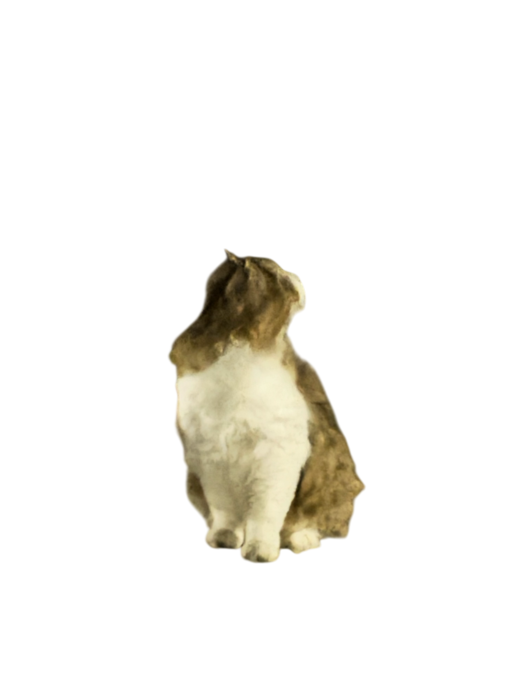
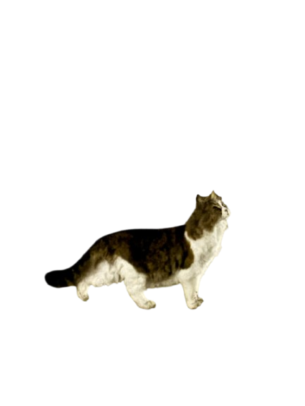
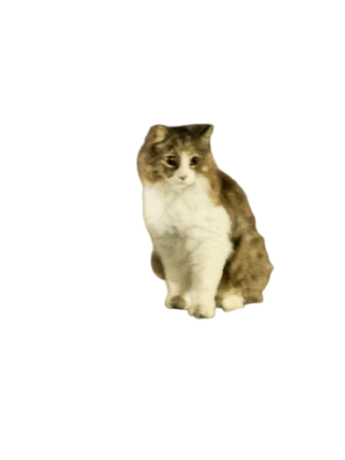
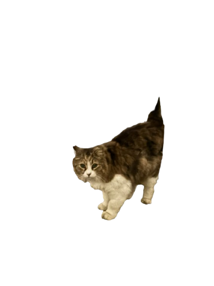

@大輔.Digerati
: こんばんは～～～あったかくなったり
寒く
サムク
なったりですな～～

@Falconese
: こんばんわ
@puke0607
:
待っ
マッ
てました〜こんばんは〜:_nao
応援
オウエン
ナオルー:
@gaonyan
: こんばんは！

@紅月ちゃん
: こんばんはー:_nao
拍手
ハクシュ
ナオルー:

@misako-0205
: こんばんは〜:heart_exclamation:
@Falconese
: :_nao
応援
オウエン
ナオルー::_nao
応援
オウエン
ナオルー:
@yuudai2787
: ナオルナさん、こんばんは:sparkles:
@暁凪-月人
: こんルナ～
@大輔.Digerati
: Welcome New Member!
@gaonyan
: :_nao
拍手
ハクシュ
ナオルー::_nao
拍手
ハクシュ
ナオルー::_nao
拍手
ハクシュ
ナオルー:
@yuudai2787
: 12
月
ガツ
ですね:_nao
拍手
ハクシュ
ナオルー:
@puke0607
:
師走
シワス
ですなぁ
@Falconese
:
今牛
イマウシ
いた？
@大輔.Digerati
:
年末
ネンマツ
だから
忙しく
イソガシク
なることはないですわ
@yuudai2787
: アバター3ありますよね:smiling_face_with_smiling_eyes::sparkles:
@大輔.Digerati
: アバター
見
ミ
たことないですな、めっちゃ
流行っ
ハヤッ
てた
印象
インショウ
はあります
@yuudai2787
:
見
ミ
たいですね〜アバターは1と2
見
ミ
てます:smiling_face_with_smiling_eyes::sparkles:
@ワイジー0820
: こんばんはです:_naoはっぴーナオルー:
@Falconese
: :_nao
乾杯
カンパイ
ナオルー:
@紅月ちゃん
: :_nao
乾杯
カンパイ
ナオルー::_nao
乾杯
カンパイ
ナオルー::_nao
乾杯
カンパイ
ナオルー:
@puke0607
: おつかれしたぁ！:_nao
乾杯
カンパイ
ナオルー:
@大輔.Digerati
: :_nao
乾杯
カンパイ
ナオルー::_nao
乾杯
カンパイ
ナオルー::_nao
乾杯
カンパイ
ナオルー::_nao
乾杯
カンパイ
ナオルー:
@ワイジー0820
: KP:_nao
乾杯
カンパイ
ナオルー:
@yuudai2787
:
乾杯
カンパイ
:clinking_glasses::_nao
乾杯
カンパイ
ナオルー:
@大輔.Digerati
: たまに
休肝日
キュウカンビ
があれば
大丈夫
ダイジョウブ
よ～～
（笑）
キゴウ
@Falconese
: アバタさんなら
知っ
シッ
てる
@暁凪-月人
:
静電気
セイデンキ
苦手
ニガテ
ｗ
@yuudai2787
:
次
ツギ
のアバター
炎
エン
が
綺麗
キレイ
そうですよね〜:sparkles:
観
ミ
たいものもやりたいこともいっぱいですね:grinning_face_with_smiling_eyes:
@大輔.Digerati
:
冬
フユ
は
静電気
セイデンキ
起き
オキ
ますな・・・
@大輔.Digerati
: パーカーとかはめっちゃ
起き
オキ
やすいですよね
@yuudai2787
: バチバチ
静電気
セイデンキ
起き
オキ
ちゃいますね:grinning_face_with_smiling_eyes:
@ワイジー0820
:
最近
サイキン
コンビニでアイス
買う
カウ
時
トキ
に
冷蔵庫
レイゾウコ
の
鉄
テツ
の
部分
ブブン
で
静電気
セイデンキ
クライマシタ
@ベルククラレス
: なおちゃんは
何
ナン
着
キ
ても
似合う
ニアウ
よね
@puke0607
:
車
クルマ
のドア
開ける
アケル
時
トキ
と
玄関
ゲンカン
のドアで
不意
フイ
打ち
ウチ
食らう
クラウ
わ
@大輔.Digerati
:
昔人
ムカシビト
に
触れ
フレ
たときにばちっとなってお
互い
タガイ
びっくりしたことありますわ
@yuudai2787
:
罰ゲーム
バツゲーム
ばりにバチんって
静電気
セイデンキ
なったことはよくありますね:face_with_tears_of_joy:
甘酸っぱい
アマズッパイ
系
ケイ
はなかったですね
笑
ワライ
@Falconese
:
握手
アクシュ
する
時
トキ
にバチってなることはよくある
@puke0607
:
彼女
カノジョ
とお
別れ
ワカレ
のチューでパチン！とか？
@gaonyan
: めっちゃ
手汗
テアセ
な
思い出
オモイデ
なら
一応
イチオウ
ありますねぇ(
遠い
トオイ
過去
カコ
)
@大輔.Digerati
:
僕
ボク
の
場合
バアイ
普段着
フダンギ
が
着物
キモノ
で
長襦袢
ナガジュバン
がポリのしかもってないから
脱ぐ
ヌグ
とき100%
起き
オキ
ますね
@Falconese
: ギター
侍
サムライ
？
@暁凪-月人
:
車
クルマ
のドアはもう
定番
テイバン
静電気
セイデンキ
@大輔.Digerati
: あ、
体
カラダ
から
静電気
セイデンキ
にがす
方法
ホウホウ
で
回す
マワス
タイプのライターつけると
火
ヒ
からでていくそうです、やっても
実感
ジッカン
はありませんが
（笑）
キゴウ
@ベルククラレス
:
チャイナ服
チャイナフク
とか
着物姿
キモノスガタ
も
見
ミ
て
見
ミ
たいです
@Falconese
:
仕事
シゴト
のですね
@ワイジー0820
:
小学生
ショウガクセイ
の
時
トキ
、
下じき
シタジキ
をゴシゴシして
頭
アタマ
にかざして
髪
カミ
立て
タテ
て
遊ん
アソン
でたの
思い出し
オモイダシ
たー^_^
@大輔.Digerati
:
着物
キモノ
は
趣味
シュミ
みたいなものです、インスタもtwitterもプロフは
着物
キモノ
になってたはずです
@sakuchan397o
: みなさんこんばんは！
少し
スコシ
遅れ
オクレ
ました:folded_hands:
満員電車
マンインデンシャ
で
複数人
フクスウニン
と
静電気
セイデンキ
発生
ハッセイ
します！
声
コエ
出さ
ダサ
ないように
唇
クチビル
噛み締め
カミシメ
て
毎日
マイニチ
電車
デンシャ
に
乗っ
ノッ
てる
日々
ヒビ
です:high_voltage:
@暁凪-月人
:
満員電車
マンインデンシャ
は
静電気
セイデンキ
やばそう:_nao
泣き虫
ナキムシ
ナオルー:
@紅月ちゃん
:
年
ネン
一春
カズハル
に
お祭り
オマツリ
で
着物
キモノ
着
キ
ますねー
御
オ
囃子
ハヤシ
笛
フエ
演奏者
エンソウシャ
として:flute:
@yuudai2787
: ナオルーさんの
着物
キモノ
楽しみ
タノシミ
ですね:smiling_face_with_smiling_eyes::kimono::sparkles:
絶対
ゼッタイ
似合う
ニアウ
ので:sparkles:
@Falconese
: やったことなーい
@Falconese
: はつみみです
@Falconese
: ナオルーにチャイナはちょっと・・・ねぇ
@暁凪-月人
: アフロサンタコスかな？
@大輔.Digerati
:
着物
キモノ
はいいぞ～～
日本人
ニホンジン
は
全員
ゼンイン
似合い
ニアイ
ます♪
@yuudai2787
: ナオルーサンタさん
楽しみ
タノシミ
ですね:smiling_face_with_smiling_eyes::christmas_tree::santa_claus::sparkles:
@ベルククラレス
: ライターは
体
カラダ
からマイナス
電力
デンリョク
を
空気
クウキ
中
チュウ
に
放出
ホウシュツ
してくれる
効果
コウカ
はありますよ。ただそこそこの
時間
ジカン
付け
ツケ
てないとダメだった
気
キ
もします
@大輔.Digerati
:
囲碁
イゴ
はルール
忘れ
ワスレ
ましたな～～
将棋
ショウギ
は
子供
コドモ
のころよくやってたけどルールはわかっても
全然
ゼンゼン
できないんでしょうな
（笑）
キゴウ
@たいせい-f8j
: オールイン！！
@Falconese
: やまくずし
@sakuchan397o
:
積み木
ツミキ
崩し
クズシ
なら
知っ
シッ
てます！
@大輔.Digerati
:
囲碁
イゴ
はPCゲームでやってましたね、ルール
覚える
オボエル
ところからチュートリアルあってやってました
@puke0607
: ナオルーの
思いつき
オモイツキ
！コーナー！
@たいせい-f8j
:
早く
ハヤク
GGきて
@紅月ちゃん
:
お囃子(おはやし)
オハヤシ
ですねー
竹
タケ
の
横笛
ヨコブエ
です:smiling_face:
雄
ユウ
獅子
シシ
に
奉納
ホウノウ
する
雌
メス
獅子
シシ
の
踊り
オドリ
の
際
サイ
の
笛
フエ
と
太鼓
タイコ
演奏
エンソウ
です。かれこれ…32
年
ネン
やってますw
@暁凪-月人
: いいタイトルコール:musical_note:
@大輔.Digerati
: あれ？そのまんまのタイトルコールだった
（笑）
キゴウ
@ベルククラレス
:
物価高
ブッカダカ
ですね。お
米
コメ
高
タカ
すぎるませんか
@大輔.Digerati
: BGMいい～
@暁凪-月人
:
落ち着く
オチツク
BGM(*'ω'*)
@yuudai2787
: Veilの
曲
キョク
になってる〜:sparkles:
@yuudai2787
:
合っ
アッ
てたらめっちゃ
嬉しい
ウレシイ
です:grinning_squinting_face::sparkles:
@puke0607
: きゃーーーー！
@Falconese
: :_nao
拍手
ハクシュ
ナオルー::_nao
拍手
ハクシュ
ナオルー:
@暁凪-月人
: ３００％(*'ω'*)
@yuudai2787
: :_nao
拍手
ハクシュ
ナオルー::_nao
拍手
ハクシュ
ナオルー::_nao
拍手
ハクシュ
ナオルー:
@暁凪-月人
: yuudaiさん
当たっ
アタッ
てそう(*'ω'*)
@sakuchan397o
: :_nao
拍手
ハクシュ
ナオルー::_nao
拍手
ハクシュ
ナオルー::_nao
拍手
ハクシュ
ナオルー:
@yuudai2787
: とっても
好き
スキ
な
曲
キョク
なので:smiling_face_with_smiling_eyes::sparkles:
@暁凪-月人
: 2
回
カイ
目
メ
のユメログで
発表
ハッピョウ
されてたかなー
